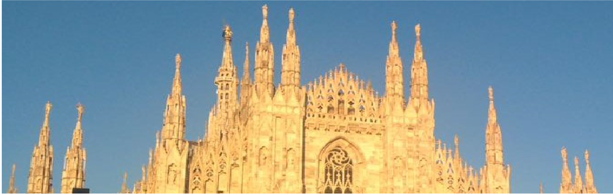

This doesn’t want to be a comprehensive guide of the city, but just to share to some tips on what the people who live and love the city do. Because Milan is like a noble and shy lady, that doesn’t boast her beauties to the hasty passing tourists. Full of stories and mojo accible to everybody wants to give her a chance to go aound with open heart and eyes.
